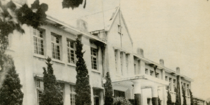
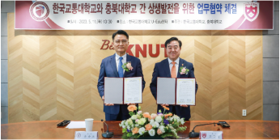

72 Years of CBNU
-
Tremendous Start
1951
Cheongju Junior Agricultural College
First opened during wartime, supported by the local community’s desire for education and the future
- 1951. 09. 27.
-
Opened as Cheongju Junior Agricultural College
(2-year course)
- 1951. 10.
- Organized the student governmen
- 1953. 03. 31.
- Held the first graduation ceremony
- 1953. 04. 01.
-
Expanded to Cheongju Agricultural College
(4-year course)
- 1956. 01. 22.
- Set up the alumni association
-
Relocation
1956

Chungbuk Provincial College
Higher education institutions in the central region to foster future talent for the country’s development
- 1956. 04. 23.
- Changed name to Chungbuk Provincial College
- 1956. 09. 25.
- Relocated to a new building in Gaesin-dong
- 1960. 03. 14.
- Published the first academic journal
- 1961. 04.
- Opened the student hall
-
Foundation
1962

Chungcheong National University
Evolved into a true ivory tower; made progress toward great dreams
- 1962. 03. 01.
- Reorganized into Chungcheong National University of Agriculture
- 1962. 11. 09.
- Held the first ‘Chungcheong University Night’ festival
-
Growth
1963

Chungbuk National College
Quantitative growth towards becoming a full-fledged university with systematic operation
- 1963. 03. 01.
- Reorganized as Chungbuk National College
- 1968. 01. 10.
- Accredited Graduate School
- 1968. 09. 26.
- Held the first annual university festival
- 1973. 12. 29.
- Established doctoral programs
- 1977. 09. 22.
- Officially announced as a full-fledged university by the Ministry of Education
-
Progress
1978

Chungbuk National University
After 28 years, finally possessed the status of a university
- 1978. 03. 01.
- Elevated to the National University 4 colleges, 27 departments, total enrollment of 1,190 students
- 1978. 03. 09.
- Appointed Jeong Beom-Mo as the first president. Held a signboard hanging ceremony
- 1979. 09. 22.
- Accredited College of Humanities
- 1985. 11. 23.
- Built the Main Library
-
Globalization
2000

Global University CBNU
Laid the groundwork for global university
- 2000. 02. 12.
- Opened the International Education Center
- 2001. 01. 01.
- Transferred the management rights of Cheongju Science College
- 2005. 03. 01.
- Established Human Resource Development Center
- 2009. 08. 07.
- Established Department of Admissions and Management
- 2010. 08. 27.
- Established Liberal Education Center
- 2013. 06. 17.
- Established Startup Business Promoting
-
Coexistence
2015

CBNU, the Center of Coexistence with the Local Community
Tried to grow with the local community by establishing a wide campus cluster
- 2015. 12. 17.
- Opened Convergence Technology Institute at Ochang Campus
- 2017. 02. 21.
- Relocated College of Pharmacy to Osong Campus
- 2021. 10. 01.
- Opened Sejong branch of CBNU Veterinary Teaching Hospital
-
Innovation
2023
Global University CBNU
Constant Innovation to prepare for the future and grow together with the local community
- 2023. 04. 17.
- Inaugurated the 22nd president
- 2023. 06. 01.
- Commenced the construction of Ochang Radio Wave Playground
- 2023. 05. 11.
- Signed an MOU with the Korea National University of Transportation for the 'Glocal University 30' Project
- 2023. 07. 01.
- Carried out Reorganization (to manage efficiently Headquarters of Employment Strategy and Support and Industry-University Cooperation Foundation; to make the head of the Industry-University Cooperation Foundation hold an additional position as the head of Startup Business Promoting Foundation; to reassign job responsibilities of Office of Planning, Office of Research Affairs, and Industry-University Cooperation Foundation)